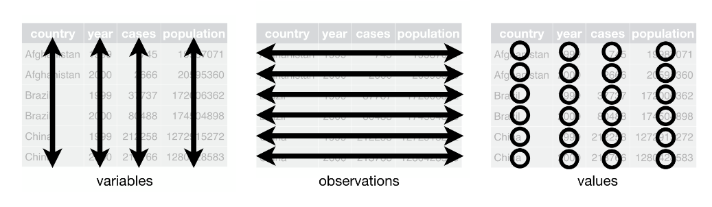

Data wrangling makes it easier to get your data into R in a useful form for visualisation and modelling. Here, we discuss the following three tools.
tibbles the variant of the data frame.
Data import in rectangular formats.
tidy data a consistent way of storing your data that makes transformation, visualisation, and modelling easier.
Tibbles
Tibbles are data frames, which makes easier for data wrangling. Tibbles can be created using the tibble package. Tibbles have an enhanced print() method which can be used with large datasets containing complex objects.
library(tibble)as_tibble(iris)
# A tibble: 150 x 5
Sepal.Length Sepal.Width Petal.Length Petal.Width Species
<dbl> <dbl> <dbl> <dbl> <fct>
1 5.1 3.5 1.4 0.2 setosa
2 4.9 3 1.4 0.2 setosa
3 4.7 3.2 1.3 0.2 setosa
4 4.6 3.1 1.5 0.2 setosa
5 5 3.6 1.4 0.2 setosa
6 5.4 3.9 1.7 0.4 setosa
7 4.6 3.4 1.4 0.3 setosa
8 5 3.4 1.5 0.2 setosa
9 4.4 2.9 1.4 0.2 setosa
10 4.9 3.1 1.5 0.1 setosa
# ... with 140 more rows
# i Use `print(n = ...)` to see more rows
Tibbles
You can create a new tibble from individual vectors with tibble() function.
library(tibble)tibble(x =1:5, y =1, z = x ^2+ y)
# A tibble: 5 x 3
x y z
<int> <dbl> <dbl>
1 1 1 2
2 2 1 5
3 3 1 10
4 4 1 17
5 5 1 26
Tibbles vs. data.frame
Tibbles shows only the first 10 rows, and all the columns fit on screen, which makes it much easier to work with large data. In addition to its name, each column reports its data type.
# A tibble: 1,000 x 5
a b c d e
<dttm> <date> <int> <dbl> <chr>
1 2022-08-10 11:32:49 2022-08-10 1 0.302 i
2 2022-08-10 11:32:49 2022-08-10 2 0.619 g
3 2022-08-10 11:32:49 2022-08-10 3 0.475 u
4 2022-08-10 11:32:49 2022-08-10 4 0.387 b
5 2022-08-10 11:32:49 2022-08-10 5 0.468 s
6 2022-08-10 11:32:49 2022-08-10 6 0.723 q
7 2022-08-10 11:32:49 2022-08-10 7 0.416 m
8 2022-08-10 11:32:49 2022-08-10 8 0.607 z
9 2022-08-10 11:32:49 2022-08-10 9 0.893 z
10 2022-08-10 11:32:49 2022-08-10 10 0.994 a
# ... with 990 more rows
# i Use `print(n = ...)` to see more rows
Tibbles vs. data.frame
Consider the below flights data set which shows on-time data for all flights that departed NYC in 2013, in nycflights13 package. If you want to see only 5 observations, use the below code. The option width =Inf shows all variables.
To read plain-text rectangular files into R, use the readr package, which is part of the core tidyverse.
read_csv() reads comma delimited files, read_csv2() reads semicolon separated files, read_tsv() reads tab delimited files, and read_delim() reads in files with any delimiter.
read_fwf() reads fixed width files. You can specify fields either by their widths with fwf_widths() or their position with fwf_positions(). read_table() reads a common variation of fixed width files where columns are separated by white space.
Data import
read_log() reads Apache style log files. (But also check out webreadr which is built on top of read_log() and provides many more helpful tools.)
Suppose you have a csv file named heights in a folder called data. Then, to read it use
heights<-read_csv("data/heights.csv")
If some meta data included in the first two lines of the data set, and you want to skip those two lines, use
heights<-read_csv("data/heights.csv", skip=2)
Data import
Example
library(readr)read_csv("The first line of metadata The second line of metadata x,y,z 1,2,3", skip =2)
# A tibble: 1 x 3
x y z
<dbl> <dbl> <dbl>
1 1 2 3
If there is a comment in the data set,use the below codes:
read_csv("# A comment I want to skip x,y,z 1,2,3", comment ="#")
# A tibble: 1 x 3
x y z
<dbl> <dbl> <dbl>
1 1 2 3
Data import
If the variable names are not included in the data set, you can specify them and read the data as heights<-read_csv("data/heights.csv", col_names = c("x", "y", "z"))
If the missing values are indicated as “.” in the data set, you can change them to NA as below: heights<-read_csv("data/heights.csv", NA= ".")
Data import
If you data contains other characters such as $100, 20% or etc, then to convert them to data use parse_number() function.
Examples
parse_number("$100")
[1] 100
parse_number("20%")
[1] 20
parse_number("It cost $123.45")
[1] 123.45
parse_number("$123,456,789")
[1] 123456789
Data import
To write dates in a given format, you can use parse_date() function.
When working with tidy data, we can use the same tools in similar ways for different data sets.
dplyr, ggplot2, and all the other packages in the tidyverse are designed to work with tidy data.
Tidy Data

Tidy Data
What are the advantages of your data to be tidy?
The general advantage is that you can select one consistent way to store your data. If you have a consistent data structure, it’s easier to learn the tools that work with it since they have an underlying uniformity.
When variables are in columns, you can use the vectorised nature of R. Most of the built-in R functions work with vectors of values.
Tidy Data
Run the following codes and identify which data set/s is/are tidy.
These are all representations of the same underlying data, but only table1 is tidy.
Tidy Data
Examples
Run the following codes.
# Compute rate per 10,000library(dplyr)table1 %>%mutate(rate = cases / population *10000)
# Compute cases per yeartable1 %>%count(year, wt = cases)
Tidy Data
If we have untidy data, how do we make them tidy?
To do this, you can use the functions pivot_longer() and pivot_wider() in tidyr.
library(tidyverse)table4a
# A tibble: 3 x 3
country `1999` `2000`
* <chr> <int> <int>
1 Afghanistan 745 2666
2 Brazil 37737 80488
3 China 212258 213766
Here, the column names 1999 and 2000 represent values of the year variable, and the values of these columns represent values of the cases variable. Note that each row represents two observations, but not one.
Tidy Data
Since one variable spreads across multiple columns in table4a , we use pivot_longer() function to make it tidy as below:
# A tibble: 6 x 3
country year cases
<chr> <chr> <int>
1 Afghanistan 1999 745
2 Afghanistan 2000 2666
3 Brazil 1999 37737
4 Brazil 2000 80488
5 China 1999 212258
6 China 2000 213766
Tidy Data
In table2 data set, one observation is scattered across multiple rows. Therefore, we have to use pivot_wider() function to make it tidy.
library(tidyverse)table2
# A tibble: 12 x 4
country year type count
<chr> <int> <chr> <int>
1 Afghanistan 1999 cases 745
2 Afghanistan 1999 population 19987071
3 Afghanistan 2000 cases 2666
4 Afghanistan 2000 population 20595360
5 Brazil 1999 cases 37737
6 Brazil 1999 population 172006362
7 Brazil 2000 cases 80488
8 Brazil 2000 population 174504898
9 China 1999 cases 212258
10 China 1999 population 1272915272
11 China 2000 cases 213766
12 China 2000 population 1280428583
# A tibble: 6 x 4
country year cases population
<chr> <int> <int> <int>
1 Afghanistan 1999 745 19987071
2 Afghanistan 2000 2666 20595360
3 Brazil 1999 37737 172006362
4 Brazil 2000 80488 174504898
5 China 1999 212258 1272915272
6 China 2000 213766 1280428583
Tidy Data
In the following data set, we can separate the rate variables to two variables.
library(tidyverse)table3
# A tibble: 6 x 3
country year rate
* <chr> <int> <chr>
1 Afghanistan 1999 745/19987071
2 Afghanistan 2000 2666/20595360
3 Brazil 1999 37737/172006362
4 Brazil 2000 80488/174504898
5 China 1999 212258/1272915272
6 China 2000 213766/1280428583
We separate the rate variables to cases and population variables.
table3 %>%separate(rate, into =c("cases", "population"), convert =TRUE)
# A tibble: 6 x 4
country year cases population
<chr> <int> <int> <int>
1 Afghanistan 1999 745 19987071
2 Afghanistan 2000 2666 20595360
3 Brazil 1999 37737 172006362
4 Brazil 2000 80488 174504898
5 China 1999 212258 1272915272
6 China 2000 213766 1280428583
# Add convert=TRUE to preserve the data type.
Tidy Data
We can also use sep option with separate function to separate integers.
table3 %>%separate(year, into =c("century", "year"), sep =2)
# A tibble: 6 x 4
country century year rate
<chr> <chr> <chr> <chr>
1 Afghanistan 19 99 745/19987071
2 Afghanistan 20 00 2666/20595360
3 Brazil 19 99 37737/172006362
4 Brazil 20 00 80488/174504898
5 China 19 99 212258/1272915272
6 China 20 00 213766/1280428583
Tidy Data
Using unite() function we can combine multiple columns into a single column.
Now, we use unite() function to rejoin the century and year columns that we created in the previous example.
library(tidyverse)table5<-table3 %>%separate(year, into =c("century", "year"), sep =2)table5 %>%unite(new, century, year, sep ="")# Run without sep="" option, and see the difference
# A tibble: 6 x 3
country new rate
<chr> <chr> <chr>
1 Afghanistan 1999 745/19987071
2 Afghanistan 2000 2666/20595360
3 Brazil 1999 37737/172006362
4 Brazil 2000 80488/174504898
5 China 1999 212258/1272915272
6 China 2000 213766/1280428583
Tidy Data (Missing values)
A value can be missing in two ways, Explicitly (i.e. flagged with NA), Implicitly (i.e. simply not present in the data).
In this data set, the return for the fourth quarter of 2015 is explicitly missing, and the return for the first quarter of 2016 is implicitly missing
# A tibble: 7 x 3
year qtr return
<dbl> <dbl> <dbl>
1 2015 1 1.88
2 2015 2 0.59
3 2015 3 0.35
4 2015 4 NA
5 2016 2 0.92
6 2016 3 0.17
7 2016 4 2.66
Tidy Data
To make missing values explicit in tidy data, we can use complete() function.
stocks %>%complete(year, qtr)
# A tibble: 8 x 3
year qtr return
<dbl> <dbl> <dbl>
1 2015 1 1.88
2 2015 2 0.59
3 2015 3 0.35
4 2015 4 NA
5 2016 1 NA
6 2016 2 0.92
7 2016 3 0.17
8 2016 4 2.66
Class work
Make table4b data set tidy, and combine it with table4a data set.
Refer the case study (12.6) shown in https://r4ds.had.co.nz/tidy-data.html, and understand the tools that we need to use for a real data set. Apply those tools to the COVID-19 confirmed data from John Hopkins University. You can access the data using the following codes: